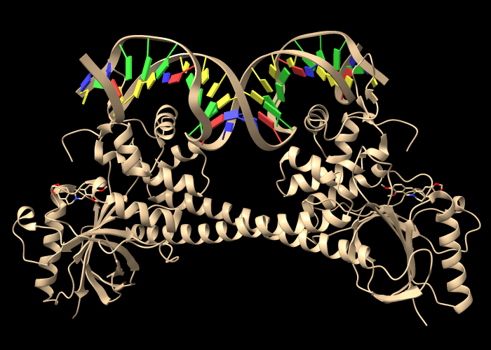

|
This tutorial explores some ways to examine the complementarity between proteins and their ligands, including drug molecules. Related tutorials: Coloring by Sequence Conservation, Delta-Opioid Receptor, Structure Analysis and Comparison, Coloring CRM1 by Electrostatic Potential
** ChimeraX 1.2 (production release May 2021) or newer should be used to follow this tutorial. **
Start ChimeraX. If you want to use the click-to-execute links in this tutorial, view this page in the ChimeraX Browser. One way to do so is by entering the ChimeraX command:
Command: open help:user/tutorials/binding-sites.htmlAll of the click-to-execute links in this tutorial are indented and appear after “Command:” Other links are simply informative and can be clicked or not, as you prefer.
ChimeraX can fetch a structure directly from the Protein Data Bank (PDB) given its 4-character ID. Open 2hyy, a structure of the human Abl kinase domain in complex with the anticancer drug imatinib:
Command: open 2hyy
The Model Panel
(lower right side of the ChimeraX window) lists 2hyy as model 1, and the
 checkbox indicates that the model is displayed.
checkbox indicates that the model is displayed.
The Log (right side of window) shows several kinds of information associated with the structure:
In the Chain information table, try clicking the chain IDs (A, etc.); see that the corresponding part of the structure becomes selected in the graphics window, as indicated with green outlines. The structure includes four copies of the kinase as chains A, B, C, and D.
Note: Selections are used to limit the scope of using the Actions menu or clicking certain icons. Thecheckbox in the Model Panel shows when a model is selected, with three possible states: checked, unchecked, and partially checked (shown with a dash on Mac).
In the Non-standard residues table, click the residue name STI (imatinib) to see where it is in the structure. In this context, “nonstandard” means residues other than water and the types of amino acids and nucleic acids typically found in biomolecules. Imatinib is a kinase inhibitor, and each copy of the kinase has its own imatinib binding site.
In the 2hyy mmCIF Assemblies table, click 1 to generate “assembly 1,” a single copy of the protein-ligand complex. As can be seen in the Model Panel, this opens the assembly as model 2 and hides the original structure (model 1,
box unchecked). Close the original structure:
Command: close #1Note: In this case, the assembly has fewer chains than the original structure. For assemblies with more than 12 copies of the original structure, clicking a link in the Assemblies table adds copies as graphical clones for efficient visualization. However, if the plan is to analyze atomic interactions between the copies or to display them differently from one another, the assembly should be generated instead as full atomic copies with the sym command and copies true, for example:
sym #1 assembly 1 copies true
Alternatively, entire assemblies can be fetched directly from the PDB with the open command, as shown in the section on Surface Coloring by Electrostatic Potential.
Try moving the structure around. Default mouse/trackpad assignments:
| rotate
|
left mouse button |
| trackpad click-drag | |
| translate in 2D
|
middle or right mouse button |
| trackpad + Alt | |
| + Shift switches from rotate to translate and vice versa | |
| zoom
|
mouse scroll wheel |
| trackpad 2-finger drag (except pinch on Mac as per Trackpad preferences) | |
| select
|
left mouse button + Ctrl, + Shift to toggle or add to selection |
| trackpad + Ctrl, + Shift to toggle or add to selection | |
To list the current assignments in the Log:
Command: mousemode
If anything is selected, Ctrl-click in “empty space” in the graphics window (away from any atoms) to clear the selection. Alternatively, you can use the menu: Select... Clear or the command:
Command: select clear
The initial display has cartoons (ribbons) for the protein, with most atoms hidden. Only the nonstandard residue and nearby sidechains are shown in atomic detail.
Many actions can be done in several different ways. One way to change the display is with presets. For example, all atoms as sticks can be shown with menu: Presets... Sticks or the command:
Command: preset sticks
...and the original appearance or at least something similar (in this case, the color is different) can be restored with menu: Presets... Original Look or the command:
Command: preset original
Of course, you can change the style of any subset of the atoms. Atoms to change can be specified by chain ID, residue number, residue name, atom name, etc., or by selection (indicated as sel in the command line). If nothing is specified, all atoms are changed, even though they might not be displayed at the time.
Command: style ball
Command: style :STI sphere
Command: style stick
The style icons 

 in the Molecule Display tab
of the Toolbar
apply to the currently selected atoms, or
if none are selected, all atoms.
in the Molecule Display tab
of the Toolbar
apply to the currently selected atoms, or
if none are selected, all atoms.
Make imatinib more obvious by changing the color of its carbon atoms:
Command: color :sti & C salmon
Capitalization of residue names in the command line is optional, but element symbols always need to be capitalized. To list color names in the Log:
Command: color list
(A more organized table is also available.)
To find only the H-bonds involving imatinib, Ctrl-click to select any atom in that residue, then press the keyboard up arrow to promote the selection to the whole residue. If the initial selection is a bond rather than an atom, the up-arrow key will need to be pressed twice. If you overshoot and select more than the drug molecule, simply press the keyboard down arrow to go back.
Alternatively, the imatinib residue could be selected with the menu: Select... Residues... STI or a command:
Command: select :sti
(You could also scroll back up in the Log to the Non-standard residues table and click its name there.) Focus the view on the selection and hide all other atoms:
Command: view sel
Command: hide ~sel
Use the H-Bonds tool (menu: Tools... Structure Analysis... H-Bonds). Keep the default settings, except turn on (check) the following if they are not already:
The Log lists five H-bonds involving imatinib. If the wrong settings were used by mistake, no worries: just change the settings and run the calculation again. The same calculation could be done with the following command:
Command: hbonds :sti reveal true log true
The structure does not include hydrogens, but their inferred positions were used in the calculation.
The H-bonds are shown in the graphics window as dashed lines. Some of the dashed lines just go to the ribbon. By default, ribbon display suppresses the display of backbone atoms. Enable showing backbone atoms at the same time as the ribbon with command:
Command: cartoon suppress false
Now you can see two backbone nitrogen atoms donating H-bonds to imatinib, and a backbone carbonyl oxygen accepting an H-bond from imatinib. The backbone atoms can still be shown and hidden individually, and most backbone atoms are still hidden. The backbone atoms of these specific residues were displayed by the Reveal atoms... option in the H-bonds calculation.
Use the Contacts tool (menu: Tools... Structure Analysis... Contacts). Keep the default settings, except turn on (check) the following if they are not already:
The Log lists 87 atomic contacts involving imatinib. The same calculation could be done with the following command:
Command: contacts :sti makePseudobonds false reveal true log true
Label the residues with displayed atoms:
Command: label @@display
A couple of the displayed residues are water (residue name HOH). Hide water and clear the selection:
Command: hide solvent
Command: select clear
Several mutations in kinase domain of the Bcr-Abl fusion protein have been implicated in cancer resistance to imatinib treatment. According to Chandrasekhar et al. Sci Rep 9:2412 (2019), these include G250E, Y253H, V256G, L301I, T315I, F317L, Y320H, M351T, E373D, and D381N.
Coloring the carbon atoms and residue labels at these 10 positions shows that five of them are already displayed due to their interactions with imatinib:
Command: name resist :250,253,256,301,315,317,320,351,373,381
Command: color resist & C gold target al
The five residues 253, 256, 315, 317, and 381 are among those listed in the Log as forming H-bonds and/or contact interactions with imatinib. Atoms at the other five positions implicated in resistance to this drug are not yet displayed. To see them all:
Command: show resist
The newly displayed residues have gold carbons but are not labeled. One way to make the 10 residues more obvious is to change their style, for example:
Command: style resist ball
Command: view resist clip false
The latter command zooms out to make the view contain all of the specified residues and turns off clipping. Clipping had been turned on by the use of view in the previous section. If you like, make the labels bigger (default height 0.7 Å):
Command: label height 1.0
Residues not directly involved in binding might contribute to drug resistance by changing in the conformation, flexibility, or stability of the protein.
Show the protein sequence in the Sequence Viewer:
Command: seq chain /A
If the sequence window seems vertically scrunched, you can click and drag its top margin upwards to increase its size within the overall window.
A selection in the 3D structure is shown as green boxes in the sequence, for example:
Command: select resist
Conversely, you can change the 3D structure selection by clicking an existing box or dragging a new box in the Sequence Viewer window. The other colored boxes indicate information from the structure: structure helices, structure strands, missing from structure.
When done with this structure, close the session (both structure and sequence) and clear the Log:
Command: close session
Command: log clear
Coloring a protein surface by lipophilicity (hydrophobicity) may help to identify interaction sites for nonpolar molecules or the lipid membrane.
Open 1fpp, a structure of the protein farnesyltransferase in complex with farnesyl diphosphate (residue name FPP):
Command: open 1fpp
From the interactive tables of information in the Log, you can see that the structure is a heterodimer (two different protein chains) bound to a single molecule of FPP. Remember that clicking a residue name in the Non-standard residues table selects the corresponding residue(s). Clear the selection by Ctrl-clicking in empty space or with the command:
Command: select clear
A “molecular lipophilicity potential” (MLP) is calculated using atomic coordinates, atomic lipophilicity parameters, and a distance-dependent function. ChimeraX can calculate MLP maps for proteins and color their surfaces by the values. This can be done with the command:
Command: mlp
...or by clicking the
 icon
in the Molecule Display tab
of the Toolbar.
The default coloring is from dark cyan for most hydrophilic
through white to dark goldenrod for most hydrophobic:
icon
in the Molecule Display tab
of the Toolbar.
The default coloring is from dark cyan for most hydrophilic
through white to dark goldenrod for most hydrophobic:
If you rotate the structure, you may be able to see that FPP occupies a deep pocket that is mostly hydrophobic. The pocket is so deep, however, it may be difficult to see the coloring. A better view is obtained by limiting the surface to a zone around FPP and hiding ribbons and atoms other than FPP:
Command: surface zone #1 near :fpp dist 8 max 1
Command: hide ~:fpp target ar
The pocket surface can now be viewed from the protein side as well as the ligand side.
In the surface command, max 1 limits the display to the largest
surface component, hiding any disconnected bits. Both protein chains
contribute to the pocket. Using the disclosure triangle for 1fpp
in the Model Panel
(lower right side of the ChimeraX window) shows that there are
separate models for the surfaces of chain A and chain B.
You can hide/show them individually with the checkboxes under the eye icon
 .
.
When finished viewing this pocket, close the structure:
Command: close
Coloring by lipophilicity is also used to identify or
highlight membrane-embedded regions.
Optionally, try using the icon
 or the command mlp
on a transmembrane protein (many examples:
1pho,
4xt3,
1eys,
etc.). A “belt” of hydrophobicity may be visible
where a protein sits in the membrane. For example:
or the command mlp
on a transmembrane protein (many examples:
1pho,
4xt3,
1eys,
etc.). A “belt” of hydrophobicity may be visible
where a protein sits in the membrane. For example:
Command: open 4xt3
Command: mlp
| 4xt3: MLP vs. Kyte-Doolittle coloring |
|---|
An alternative to calculating the MLP is to use a constant lookup value for each type of amino acid residue. A ChimeraX command script to assign Kyte-Doolittle hydrophobicity values and color the protein surface from dodger blue for the most hydrophilic through white to orange red for the most hydrophobic
Coloring by a lookup value for each residue type often gives a similar impression to MLP coloring, but can be quite different in specific cases because all types of amino acids contain both polar and nonpolar atoms. In other words, even the most hydrophobic residues include some hydrophilic atoms, and vice versa.
If any structures are open, close them:
Command: close
The protein in structure 1g74 has an oleic acid residue OLA in an interior pocket. The following commands open the structure (model #1), show its molecular surface (model #1.1), and turn on clipping to slice the structure (creating a planar surface cap, model #1.1.1):
Command: open 1g74
Command: surface
Command: clip
The model hierarchy can be viewed in the Model Panel.
Next, turn off clipping of the atomic model so that only the surface is clipped (per-model clipping), hide ribbons and atoms other than oleic acid, and color the carbon atoms in oleic acid green:
Command: clip model #!1 off
Command: hide ~:ola targ ar
Command: color :ola & C green
The clipping plane can be translated and rotated
interactively with the mouse

 .
.
Color the molecular surface by molecular lipophilicity potential (MLP). The planar surface cap is not automatically colored along with the outer surface, but can be colored with an additional command in which the atoms to use (here, all protein atoms) are specified separately from the surface to color:
Command: mlp
Command: mlp protein surface #1.1.1
The cap can be made transparent with another command, for example:
Command: transparency #1.1.1 30Analogously, to color the surface cap by Coulombic electrostatic potential (more about electrostatic potential in the next section):
Command: coulombic protein
Command: coulombic protein surf #1.1.1 offset 0
The Coulombic cap coloring would need to be reapplied if the clipping plane were subsequently moved, however (unless you are using ChimeraX 1.3 from 5/16/2021 or newer).
When finished with this structure, close the session:
Command: close session
Coloring a protein surface by electrostatic potential (ESP) may help to identify binding sites for charged or polar molecules. Regions of positive potential are complementary to negative charges, whereas regions of negative potential complement positive charges.
ESP is calculated from atomic coordinates and partial charges. ChimeraX can calculate a simple Coulombic ESP on the fly, or it can read in an ESP map file calculated with another program, such as APBS. This tutorial uses the first (simple) method, as it does not require a separate calculation.
Open an assembly of 3d6y, the bacterial gene regulator BmrR:
Command: open 3d6y from rcsb_bio maxAssemblies 1
|  |
BmrR regulates multidrug resistance. In this structure, it is bound to DNA and the positively charged alkaloid berberine. The Non-standard residues table in the Log lists berberine and glycerol; click the residue names BER and GOL to see where they are in the structure. Hide glycerol, water, and protein atoms:
Command: hide :gol
Command: hide solvent
Command: hide protein
To avoid any confusion from a hidden selection, clear it by Ctrl-clicking in empty space or using the command:
Command: select clear
The following shows surfaces for the protein chains and colors them by Coulombic ESP calculated on the fly:
Command: coulombic protein
The default color scheme is red for negative potential, white at zero, and blue for positive:
The Molecule Display tab
of the Toolbar
includes an  icon for Coulombic coloring,
but it will also apply to the DNA unless protein (only) is
selected before the icon is clicked.
icon for Coulombic coloring,
but it will also apply to the DNA unless protein (only) is
selected before the icon is clicked.
The remaining commands in this section are just examples of display settings that might be useful for figures.
The nucleotides are color-coded by base type:
| A | T | G | C |
Command: color nucleic tan
Command: cartoon style nucleic xsection round width 1.5 thick 1.5
Command: nuc stubs
The nucleotide change to stubs can also be done by clicking
 in the Nucleotides tab
of the Toolbar.
in the Nucleotides tab
of the Toolbar.
Make the berberine stand out with fatter sticks and bright green carbons:
Command: size :ber stickrad .7
Command: color C & :ber limegreen
Use icons in the Graphics tab of the Toolbar to:
|
|
When making a figure, it is usually best to compose the rest of the image before adding any color key and/or 2D labels, since their sizes and positions will need to be adjusted to fit the image layout.
A color key can be added with the key option of the coloring command, in this case, coulombic:
Command: coulombic protein key true
(If you already did the coloring, just repeat the same command except with key true appended.) This draws an initial color key, but also opens the Color Key tool and enables redrawing and moving the key with the mouse (the Adjust key... option in the tool). The Adjust key... option can be unchecked to restore the mouse to moving the structure instead of the key. Closing the tool also restores the mouse function to moving the structure.
When the color key is in place, a text label can be added with a command, for example:
Command: 2dlab text 'electrostatic potential'
...and then dragged interactively to the desired location
with the move label mouse mode:
in the Right Mouse tab
of the Toolbar, click the icon
 and then use the right mouse button or trackpad + Alt on Windows,
trackpad +
and then use the right mouse button or trackpad + Alt on Windows,
trackpad +  on Mac to drag the label.
on Mac to drag the label.
Although it is usually most convenient to position the key and label interactively as described above, and to set color-key colors and values by using the key option of the coloring command, these could be done explicitly with commands instead. For example:
Command: 2dlab text 'electrostatic potential' xpos .53 ypos .15
Command: key red:-10 white:0 blue:10 pos .51,.09 size .32,.04
If you now have multiple copies of the label, you can hide or delete the extras. Each label is added as a submodel of the 2D labels model. One way to show/hide/close them is by using the Model Panel; in that tool, use the disclosure triangle next to a model's name to show its submodels.
To quit from ChimeraX, just close its main window or use a command:
Command: exit